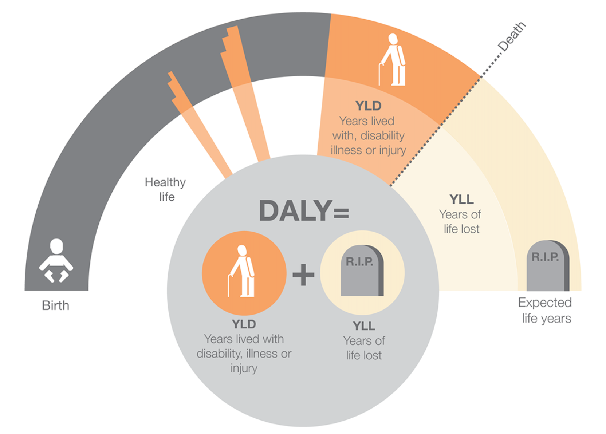

Distributed Adjusted
Life Years Visualisation
About
People across the world are affected by diseases, injuries and disabilities. The time spent living with these burdens combined with the time lost comes together as Disability-adjusted life years (DALY). This is a measure of the overall burden on individuals.
Data from World Bank and the World Health Organisation are used to form various visualisations to help understand life expectancy and DALY.
Visualisation were produced based upon factors that affects life expectancy and DALY. Different Countries and years were compared to see how DALY varies
Overview of Life Expectancy
A choropleth was drawn based on the life expectancy of different countries and years. As shown, most of Asian countries, beside a few like Japan and Vietnam, have a lower life expectancy than the more developed European countries. However, countries within Africa, have a much lower life expectancy than the rest of the world. The scatter plot of the average life expectancy and GDP shows that there is a positive relationship between the two, and this indicates that the low life expectancy in Africa could be due to its low gross development product (GDP), which is often used as an indicator of the country’s economy. Over time, from year 2000, the average life expectancy across countries have increased over the years to 2014.
Motion Chart
Life expectancy increases as the year progresses. This is an interactive motion chart inspired by Hans Rosling. The motion chart shows circles representing different regions and their relations to life expectancy and GDP. The country with larger circle are countries with higher population. The dates can also be scrolled left and right to view the different years.
DALY by Type
Disability-adjusted life years is calculated as the sum of incidence * duration * severity, and sum of the number of deaths * standard life expectancy at the age of death. A Stacked Bar Chart was graphed to show the different burdens and its contribution to the total DALY across all countries for the year 2000 and 2012. Stroke, road injuries and lower respiratory infections have the highest contribution towards the overall DALY.
DALY Calculation Method

YLD = Sum of incidence × duration × severity weight, and
YLL = Sum of number of deaths × standard life expectancy at age of death
Stacked Bar Chart
DALY by Country
Did you know about 1070 Lives are lost per 100,000 of a population in Swaziland...
There are 5 countries shown on this graph, you can view and compare each countries and their relative DALY figure per 100,000 of a population. The countries chosen were picked in respect to its human developmental index (HDI), where countries with high HDI such as Australia and low HDI such as Swaziland were chosen. Try hovering over the pie chart or the bar chart itself. Hovering over the pie chart allows you to view how different factors between communicable diseases, non-communicable diseases and injuries contribute to the DALY of each countries.